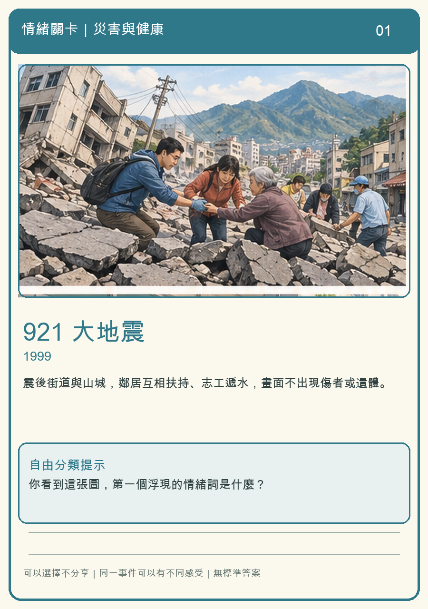

隨機抽一張，先看畫面
請長輩描述看到的人、事、地點與氣氛，不急著公布事件名稱。
把事件卡當成一扇窗：先請長輩猜猜看，再邀請他分享記憶、情緒與想法。

先不公布答案，請問：「你覺得這張圖在說什麼？你會用哪個情緒詞形容？」
請長輩描述看到的人、事、地點與氣氛，不急著公布事件名稱。
可以從年代、生活經驗或新聞記憶開始猜，也可以只說自己看到的感覺。
選完後再問：「同一個事件，還可能有什麼不同感受？」讓答案回到分享。
點選圖卡即可帶回活動區；圖卡可用來做情緒分類、回憶分享與同理討論。
包含 40 張單張 PNG、A4 裁切版 PDF 與完整使用說明，可直接列印或投影。